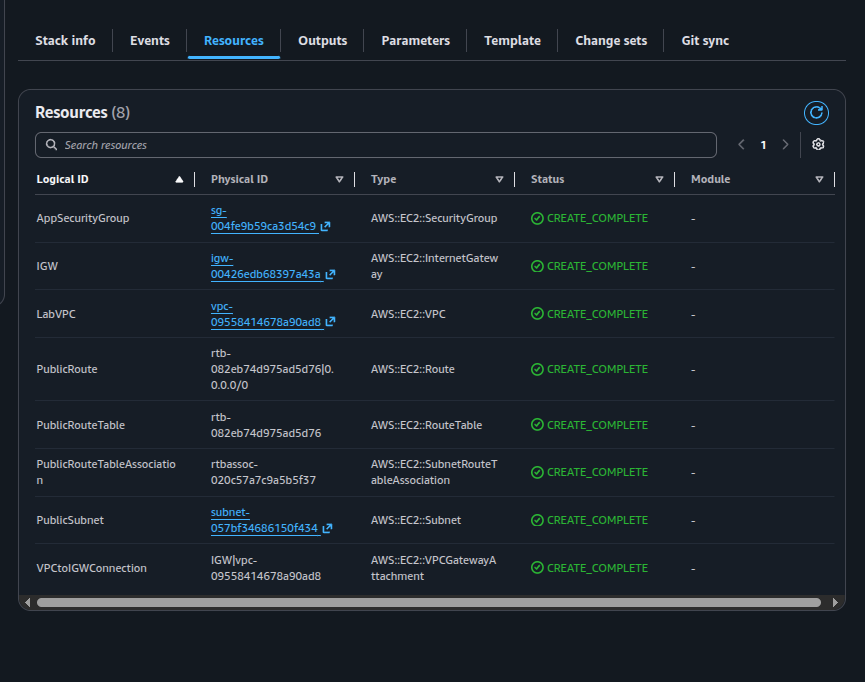
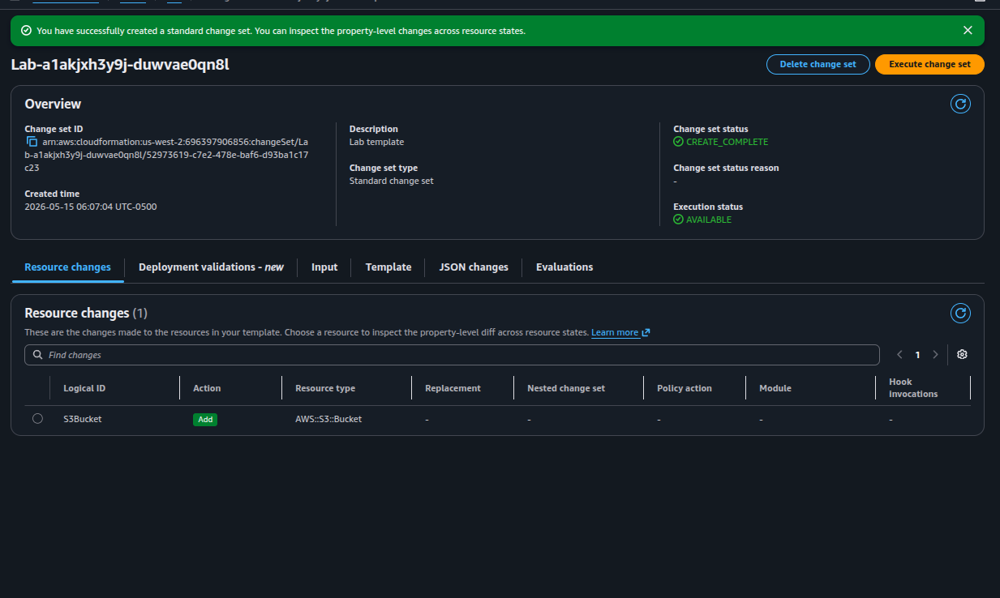
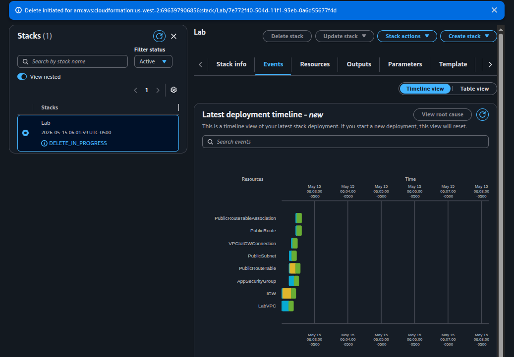

Task 1 — Deploy
Uploaded task1.yaml and created the Lab stack with 8 networking
resources: VPC, Subnet, IGW, Route Table, Route, Route Table Association, IGW Attachment, and a
Security Group.
Deploy, modify, and destroy AWS infrastructure as a single declarative unit using CloudFormation stacks. The lab walks a YAML template from a bare VPC + Security Group baseline to a fully wired stack that includes an S3 bucket and an EC2 instance, then tears everything down with a single delete operation.
Built and torn down a CloudFormation stack named Lab across four tasks. Each task isolates one IaC concept: initial deploy, incremental edit with a minimal resource, incremental edit with cross-references, and full teardown.
Uploaded task1.yaml and created the Lab stack with 8 networking
resources: VPC, Subnet, IGW, Route Table, Route, Route Table Association, IGW Attachment, and a
Security Group.
Edited the template to add an S3 bucket (2 lines) and an EC2
instance with 5 properties wired to the VPC resources via !Ref.
Updated the stack via change sets.
Deleted the stack. CloudFormation removed every resource it managed in reverse dependency order, no manual cleanup required.
CloudFormation templates are YAML (or JSON) documents with three primary sections. Indentation is significant: two spaces per level, hyphens for list items.
| Section | Purpose | What this lab used it for |
|---|---|---|
Parameters |
Inputs prompted at deploy/update time. Can have defaults and types. | Two CIDR ranges for VPC and Subnet. In Task 3, the SSM-backed
AmazonLinuxAMIID parameter. |
Resources |
The infrastructure to create. Each resource has a logical ID, a type, and optional properties. | VPC + 6 networking resources + Security Group baseline. Later: S3 bucket and EC2 instance. |
Outputs |
Selective information exported from the stack (e.g. ARNs, IDs) for humans or other stacks to reference. | The default Security Group ID of the created VPC. |
!Ref: CloudFormation does not require explicit
ordering of resources. When PublicRouteTable declares VpcId: !Ref LabVPC,
CloudFormation infers the dependency and creates the VPC first. This implicit dependency graph is
one of the highest-value features of IaC.
Four tasks, executed against the same stack named Lab in us-west-2.
Evidence captured at the points where the lifecycle status visibly changes.
task1.yaml and inspected the three sections: two CIDR parameters
(VPC and Subnet) under Parameters, eight resources under
Resources, and one Security Group ID under Outputs.task1.yaml.VPCGatewayAttachment, and so on.
AWS::EC2::* all in
CREATE_COMPLETE after Task 1.LabVPC (VPC),
PublicSubnet (Subnet), IGW (Internet Gateway),
VPCtoIGWConnection (VPCGatewayAttachment), PublicRouteTable,
PublicRoute (the 0.0.0.0/0 route via the IGW),
PublicRouteTableAssociation, and AppSecurityGroup. This is the
minimum viable public network in AWS.
task1.yaml locally and appended the minimum-viable S3 resource under
Resources. Two lines total — logical ID and type:Resources:
# ... existing VPC / Subnet / SG resources above ...
S3Bucket:
Type: AWS::S3::BucketAWS::S3::Bucket. Every other resource was
marked unchanged, confirming no redeployment of the networking layer.
Lab-a1akjxh3y9j-duwvae0qn8l — exactly one resource
change: Add S3Bucket (AWS::S3::Bucket).EC2 is harder than S3 because the instance depends on three other resources in the same template (AMI, Security Group, Subnet). The lab introduces two techniques to solve that cleanly.
Hard-coding an AMI ID would tie the template to a single region. Instead, the AMI is resolved at deploy time from the SSM public parameter store:
Parameters:
AmazonLinuxAMIID:
Type: AWS::SSM::Parameter::Value<AWS::EC2::Image::Id>
Default: /aws/service/ami-amazon-linux-latest/amzn2-ami-hvm-x86_64-gp2The same template will now resolve to the correct Amazon Linux 2 AMI in any region CloudFormation deploys to. The AMI ID never appears in the template itself.
!Refs)AppServer:
Type: AWS::EC2::Instance
Properties:
ImageId: !Ref AmazonLinuxAMIID
InstanceType: t3.micro
SecurityGroupIds:
- !Ref AppSecurityGroup
SubnetId: !Ref PublicSubnet
Tags:
- Key: Name
Value: App ServerSecurityGroupIds is a list — even with a single SG, the YAML uses the
hyphen list syntax. This was the most common gotcha flagged in the lab tips.!Ref calls (AmazonLinuxAMIID,
AppSecurityGroup, PublicSubnet) create implicit dependencies.
CloudFormation guarantees the referenced resources exist before EC2 launch.
Lab in
DELETE_IN_PROGRESS. The timeline view shows all 8 networking resources
queued for teardown.The lab was performed through the console. For reference and future runs, here are the equivalent AWS CLI commands that produce the same lifecycle.
aws cloudformation create-stack \
--stack-name Lab \
--template-body file://task1.yaml \
--capabilities CAPABILITY_NAMED_IAM \
--region us-west-2
# Block until the stack reaches CREATE_COMPLETE
aws cloudformation wait stack-create-complete \
--stack-name Lab --region us-west-2
# Inspect the result
aws cloudformation describe-stacks \
--stack-name Lab --region us-west-2 \
--query 'Stacks[0].{Status:StackStatus,Outputs:Outputs}'# Create a change set against the running stack
aws cloudformation create-change-set \
--stack-name Lab \
--change-set-name add-s3-bucket \
--template-body file://task2.yaml \
--capabilities CAPABILITY_NAMED_IAM \
--region us-west-2
# Inspect what will change before applying
aws cloudformation describe-change-set \
--stack-name Lab \
--change-set-name add-s3-bucket \
--region us-west-2 \
--query 'Changes[*].ResourceChange.{Action:Action,Logical:LogicalResourceId,Type:ResourceType}'
# Apply the change set
aws cloudformation execute-change-set \
--stack-name Lab \
--change-set-name add-s3-bucket \
--region us-west-2
aws cloudformation wait stack-update-complete \
--stack-name Lab --region us-west-2# Stream the most recent stack events (timestamps + resource status)
aws cloudformation describe-stack-events \
--stack-name Lab --region us-west-2 \
--query 'StackEvents[*].{T:Timestamp,Status:ResourceStatus,Logical:LogicalResourceId,Reason:ResourceStatusReason}' \
--output table
# List resources currently managed by the stack
aws cloudformation list-stack-resources \
--stack-name Lab --region us-west-2 \
--output tableaws cloudformation delete-stack \
--stack-name Lab --region us-west-2
aws cloudformation wait stack-delete-complete \
--stack-name Lab --region us-west-2
# Confirm the stack is gone (DELETE_COMPLETE stacks are filtered out by default)
aws cloudformation list-stacks \
--region us-west-2 \
--stack-status-filter CREATE_COMPLETE UPDATE_COMPLETE \
--query 'StackSummaries[?StackName==`Lab`]'AWS::SSM::Parameter::Value<…> to make a template region-agnostic
by resolving the AMI at deploy time.!Ref; CloudFormation
derives the dependency order from the references.SecurityGroupIds is a YAML list — even a single SG must use the
hyphen syntax.CloudFormation closes the gap between a manually-clicked AWS console and a reproducible, versionable deployment. The same YAML file that built this lab can be committed to a git repository, peer-reviewed, deployed into multiple regions, and deleted on demand — identically each time.
The two non-obvious primitives are change sets (a declarative dry run before any change is applied) and SSM Parameter references (which decouple region-specific data from the template itself). Together they make stacks safe to update in production and portable across regions.
The Optional verification steps (browsing the VPC, S3, and EC2 consoles after each task) were not performed — the Resources tab inside the CloudFormation console already lists every managed object with its physical ID and link.